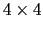

The same actions can be taken on the scripting level. The Text interface also gives you more flexibility through the atom selection mechanism allowing to choose the atoms to fit/compare.
Once the two selections are made, the RMSD calculation is a matter of calling the measure rmsd function. Here's an example:
set sel1 [atomselect 0 "backbone"]
set sel2 [atomselect 1 "backbone"]
measure rmsd $sel1 $sel2
Info) 10.403014
This prints the RMSD between the backbone atoms of molecule 0 with
those of molecule 1. You could also use a weighting factor in these
calculations. The best way to understand how to do this is to see
another example:
set weighted_rmsd [measure rmsd $sel1 $sel2 weight mass]
Info) 10.403022
In this case, the weight is determined by the mass of each atom. Actually, the term is really one of the standard keywords available to an atom selection. Other ones include index and resid (which would both be rather strange to use) as well as charge, beta and occupancy. These last terms useful if you want to specify your own values for the weighting factors.
The best-fit alignment is done in two steps. The first is to compute the  matrix transformation that takes one set of coordinates onto the other. This is done with the measure fit command. Assuming the same selections as before:
set transformation_matrix [measure fit $sel1 $sel2]
Info) {0.971188 0.00716391 0.238206 -13.2877}
{0.0188176 0.994122 -0.106619 3.25415} {-0.23757 0.108029 0.965345 -2.97617}
{0.0 0.0 0.0 1.0}
As with the RMSD calculation, you could also add an optional weight
<keyword> term on the end.
The next step is to apply the matrix to a set of atoms using the move command. So far you have two coordinate sets. You might think you could do something like $sel1 move $transformation_matrix to apply the matrix to all the atoms of that selection. You could, but that's not the right selection.
The thing to recall is that $sel1 is the selection for the backbone atoms. You really want to move the whole fragment to which it is attached, or even the whole molecule. (This is where the discussion earlier comes into play.) So you need to make a third selection containing all the atoms which are to be moved, and apply the transformation to those atoms.
# molecule 0 is the same molecule used for $sel1
set move_sel [atomselect 0 "all"]
$move_sel move $transformation_matrix
As a more complicated example, say you want to align all of molecule 1 with molecule 9 using only the backbone atoms of residues 4 to 10 in both systems. Here's how:
# compute the transformation matrix
set reference_sel [atomselect 9 "backbone and resid 4 to 10"]
set comparison_sel [atomselect 1 "backbone and resid 4 to 10"]
set transformation_mat [measure fit $comparison_sel $reference_sel]
# apply it to all of the molecule 1
set move_sel [atomselect 1 "all"]
$move_sel move $transformation_mat
Here's a longer script which you might find useful. The problem is to compute the RMSD between each frame of the simulation and the first frame. Usually in a simulation there is no initial global velocity, so the center of mass doesn't move, but because of angular rotations and because of numerical imprecisions that slowly build up, the script aligns the molecule before computing its RMSD.
# Prints the RMSD of the protein atoms between each \timestep
# and the first \timestep for the given molecule id (default: top)
proc print_rmsd_through_time {{mol top}} {
# use frame 0 for the reference
set reference [atomselect $mol "protein" frame 0]
# the frame being compared
set compare [atomselect $mol "protein"]
set num_steps [molinfo $mol get numframes]
for {set frame 0} {$frame < $num_steps} {incr frame} {
# get the correct frame
$compare frame $frame
# compute the transformation
set trans_mat [measure fit $compare $reference]
# do the alignment
$compare move $trans_mat
# compute the RMSD
set rmsd [measure rmsd $compare $reference]
# print the RMSD
puts "RMSD of $frame is $rmsd"
}
}
To use this, load a molecule with an animation
(for example, $VMDDIR/proteins/alanin.DCD from the VMD distribution).
Then run print_rmsd_through_time. Example output is shown here:vmd > print_rmsd_through_time RMSD of 0 is 0.000000 RMSD of 1 is 1.060704 RMSD of 2 is 0.977208 RMSD of 3 is 0.881330 RMSD of 4 is 0.795466 RMSD of 5 is 0.676938 RMSD of 6 is 0.563725 RMSD of 7 is 0.423108 RMSD of 8 is 0.335384 RMSD of 9 is 0.488800 RMSD of 10 is 0.675662 RMSD of 11 is 0.749352 [...]